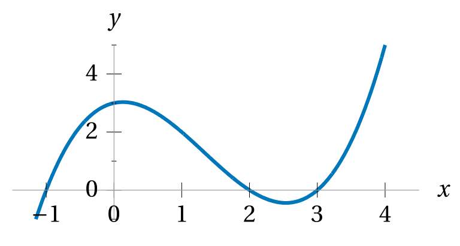

Calculate the value(s) of \(x\) that satisfy
each of the following polynomial equations.
\(x(3x+5)(x+6)(x-4)=0\)
\(x^5-6x^4-7x^3=0\)
\(x^2=7x-42\)
\(3x^3=1029\)
\(3x^3=1029x^2\)
\(3x^3=1029x^2+9x\)
\(x^4-10x^2+21=0\)
\(x^4-4x^2-21=0\)
\(2x^6-x^3-7=0\)
Suppose a polynomial function \(f\) has roots at
\(x = 5\) and \(x = \frac{1}{2}\) and \(x = -8\) and \(x = 1,\)
and satisfies \(f(6) = 1540.\)
Write down a formula for \(f(x).\)
Referring to the graph of this cubic polynomial function,
can you reverse engineer a formula for the function?
Hint: you need to get four pieces of information from the graph.

Suppose you have a 24”×36” rectangle of cardboard.
You can make an open-top cardboard box from it
by cutting \(x\) × \(x\) squares from the corners of this rectangle
and folding up the resulting “flaps” to become the sides of the box.
Recall that the volume of a box is the product of
the lengths of its three dimensions, length × width × height.
Write down a polynomial formula for the function \(V(x)\)
that returns the volume of the box
if you cut out \(x\) × \(x\) squares from the corners.
What are the roots of \(V(x)?\)
For those values of \(x,\) what does the box look like?
Use technology to calculate
the maximum possible volume of this box.
Use technology to calculate
all the possible lengths that \(x\) may be
if the volume of the box must be \(1280\) cubic feet.
How would the set-up for this problem
and the function \(V(x)\) have to change
if we want the “flaps” of the box
to include additional material that can fold over
and be taped to form a “lid” to the box,
like most cardboard boxes do?